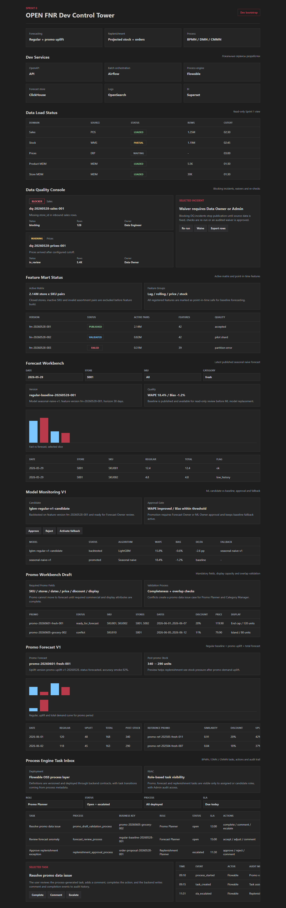

OPEN FNR Sprint 9: Process Engine Foundation
Аннотация: тестируем фундамент OPEN FNR Process Engine, чтобы бизнес-процессы исполнялись через BPMN/DMN/CMMN-контракты, задачи приходили в UI из backend, а действия пользователя оставляли проверяемый audit trail.
Что проверяем и зачем
| Область | Зачем тестируем | Ожидаемый результат | Фактический результат |
|---|---|---|---|
| Process definitions | Убедиться, что BPMN/DMN/CMMN артефакты зарегистрированы и версионируются. | API возвращает deployed/draft definitions с типами bpmn, dmn, cmmn. | Получено. |
| Task Inbox | Проверить, что UI показывает задачи и действия, а не hardcode-переходы. | Видны task, process, business key, role, SLA, actions. | Получено. |
| RBAC | Проверить фильтрацию задач по роли участника процесса. | Promo Planner видит только promo-задачу. | Получено. |
| Audit | Проверить трассировку процесса и выполнения задачи. | Возвращаются process_started, task_created, comment_added, task_completed. | Получено. |
UI-тестирование
Шаги
- Открываем Dev Control Tower и находим блок
Process Engine Task Inbox. - Проверяем фильтры Role, Status, Process, SLA. Они фиксируют рабочий контекст пользователя.
- Проверяем таблицу задач: название, процесс, бизнес-ключ, роль, статус, SLA, доступные действия.
- Выбираем задачу
Resolve promo data issueи проверяем доступные кнопки Complete, Comment, Escalate. - Проверяем блок audit history, чтобы пользователь видел, что произошло с процессом.
Скриншот

Тестирование бизнес-процессов
| Процесс | Что делаем | Почему | Результат |
|---|---|---|---|
| Deployment pipeline | Вызываем GET /process/definitions. |
Проверяем, что backend знает о BPMN/DMN/CMMN и их версиях. | Definitions доступны. |
| Task assignment | Вызываем GET /process/tasks?role=Promo Planner. |
Проверяем роль участника процесса и видимость задач. | Возвращается только promo task. |
| Task completion | Вызываем POST /process/tasks/task-promo-001/complete. |
Проверяем процессный переход и запись комментария. | Task completed, audit events созданы. |
| Error path | Пробуем выполнить недоступное действие approve. |
Проверяем, что backend не разрешает переход вне process metadata. | Получен HTTP 400. |
| Process audit | Вызываем GET /process/instances/proc-promo-20260601-001/audit. |
Проверяем восстановимость истории процесса. | История содержит старт процесса и создание задачи. |
Автоматические проверки
| Команда | Результат |
|---|---|
python -m pytest |
71 passed |
npm.cmd run build |
Frontend build completed |